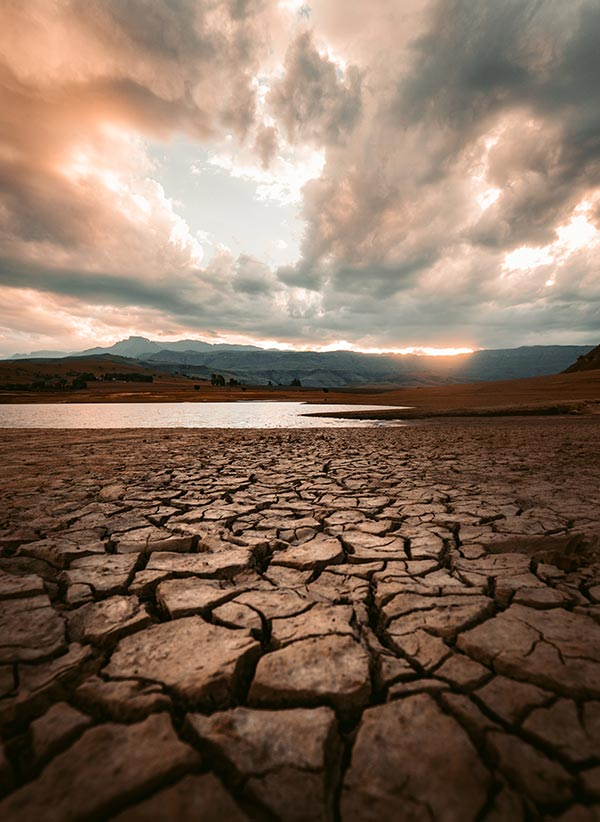

Drough Tolerant Plants Save Water, Money and Time
Michigan State University | January 10, 2014 | Mary Wilson

When creating a water-wise landscape, follow these key strategies for success. Recognize site
variations. Areas in your landscape may significantly vary in soil type (sand versus clay), exposure to
light (sun versus shade) and wind, evaporation rates and moisture levels. Sandy, well-drained soil
dries out quicker, while heavy clay soil is likely to remain moist longer. Adding in exposure to sun
and wind can create a dry microclimate even in areas with adequate rainfall.
Select plants that
match
the site conditions. Use plants that thrive under existing site conditions. A poor match leads to poor
performance and possible plant death. Group plants of “like needs.” Intentionally group plants together
that have similar water and sun exposure needs. Group any water-demanding plants together in a site
close to a water source. Provide care during establishment.
Even drought-tolerant plants
require
supplemental watering during establishment. Once the root system is established, the plant will require
less attention. Apply mulch to conserve soil moisture for newly developing roots.